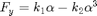
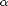
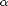
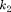
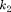

Pneu Polinomial
Relação não linear entre a força lateral e o ângulo de deriva.
Contents
Equacionamento
A equação que descreve este modelo é dada por:

Onde  é a força lateral e  é o ângulo de deriva.
é a força lateral e  é o ângulo de deriva.  e  são constantes do modelo.
e  são constantes do modelo.
Hipóteses
- Relação não linear.
- Válido apenas até o ângulos de deriva que fornece a máxima força lateral (Saturação do pneu).
Código
Código da função:
classdef PneuPolinomial < DinamicaVeicular.Pneu methods % constructor function self = PneuPolinomial(varargin) if nargin == 0 self.params = [1000 500]; % k1 - Coeficiente angular % k2 - Coeficiente do modelo polinomial else self.params = varargin{1}; end end function Fy = Characteristic(self,alpha) % Coeficientes do modelo polinomial k1 = self.params(1); k2 = self.params(2); % Força lateral polinomial Fy = - (k1*alpha-k2*alpha.^3); end end properties params end end